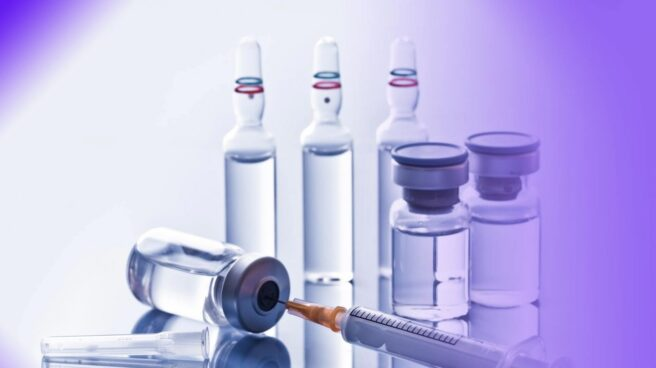

La vacuna rusa contra la Covid-19, Sputnik V, mostró 42 días después de la primera dosis una eficacia de más del 95%, según informaron este martes en un comunicado el Centro de Epidemiología y Microbiología Nikolai Gamaleya y el Fondo de Inversiones Directas de Rusia (FIDR). Según los datos preliminares del segundo análisis, la eficacia de la vacuna rusa después de 28 días es del 91,4%. Sin embargo, este martes han dado a conocer en una nota de prensa que la efectividad aumenta al 95% transcurridos 42 días desde la administración de la primera dosis, esto es, 21 días después de la segunda dosis. Los investigadores han recordado que 42 días después del primer pinchazo es el plazo que consideran para generar una "respuesta inmune estable".
© Lucía Álvarez Núñez / CONTACTO